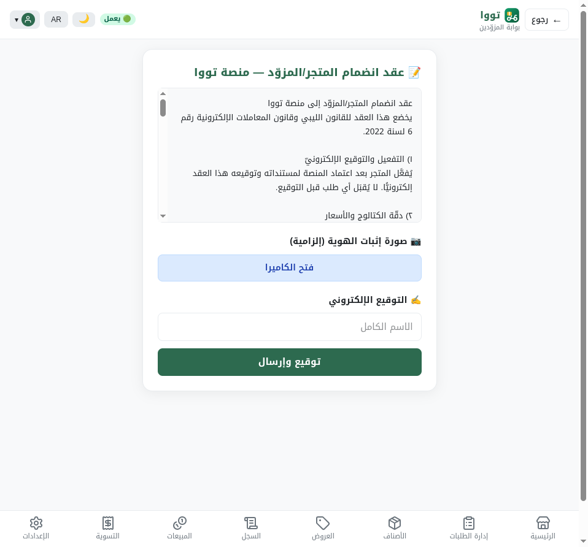
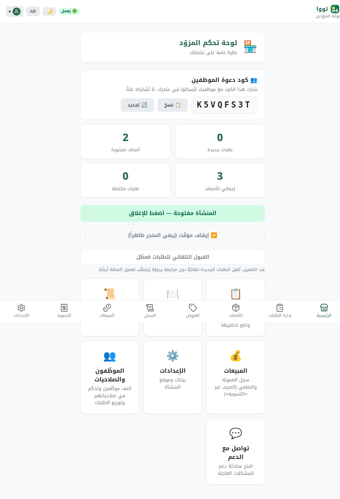
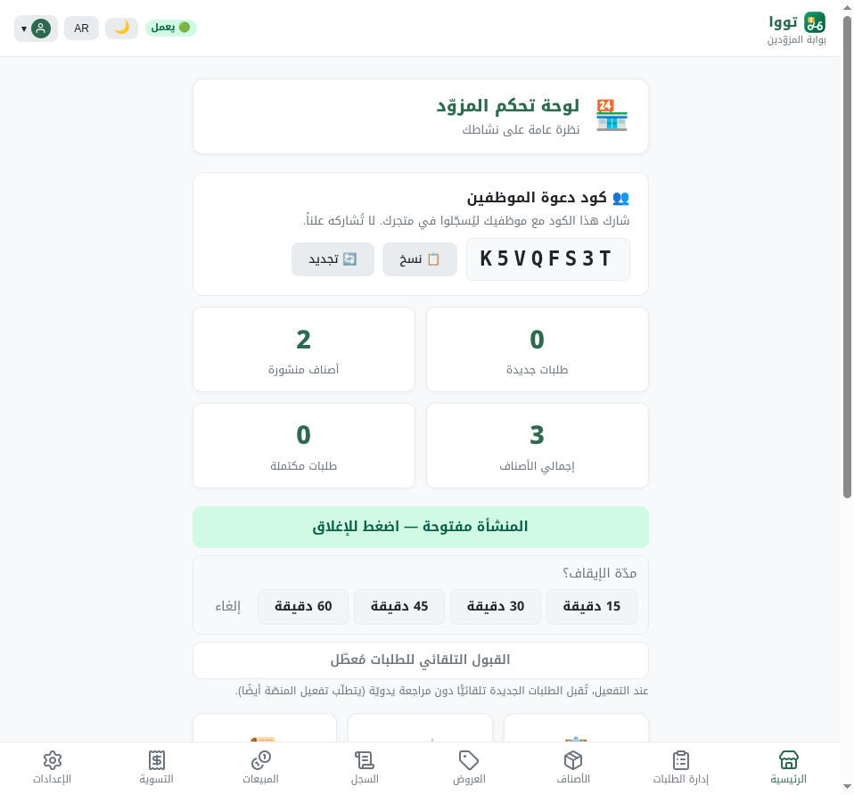
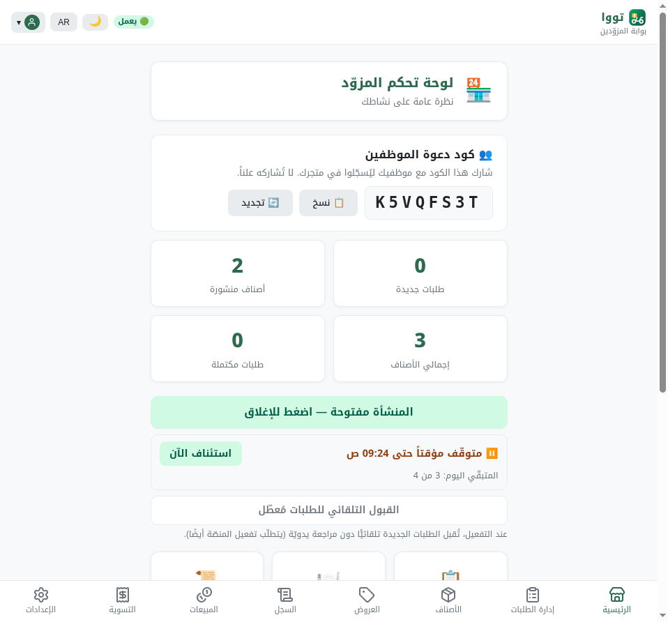
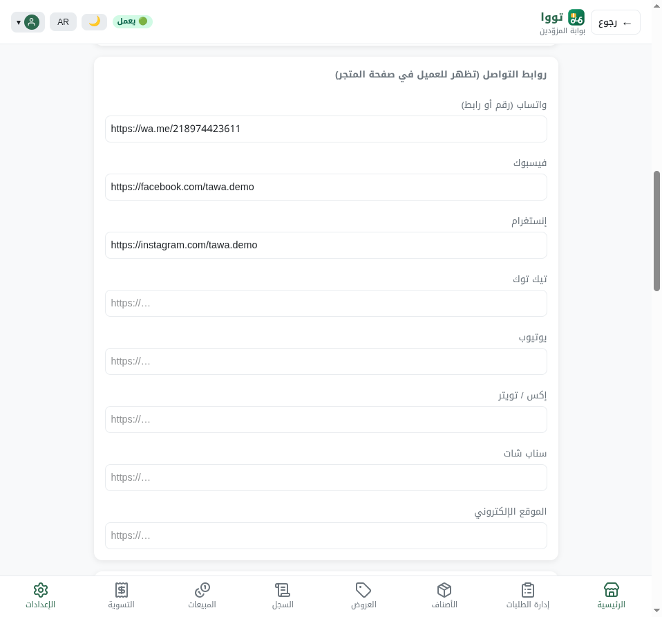
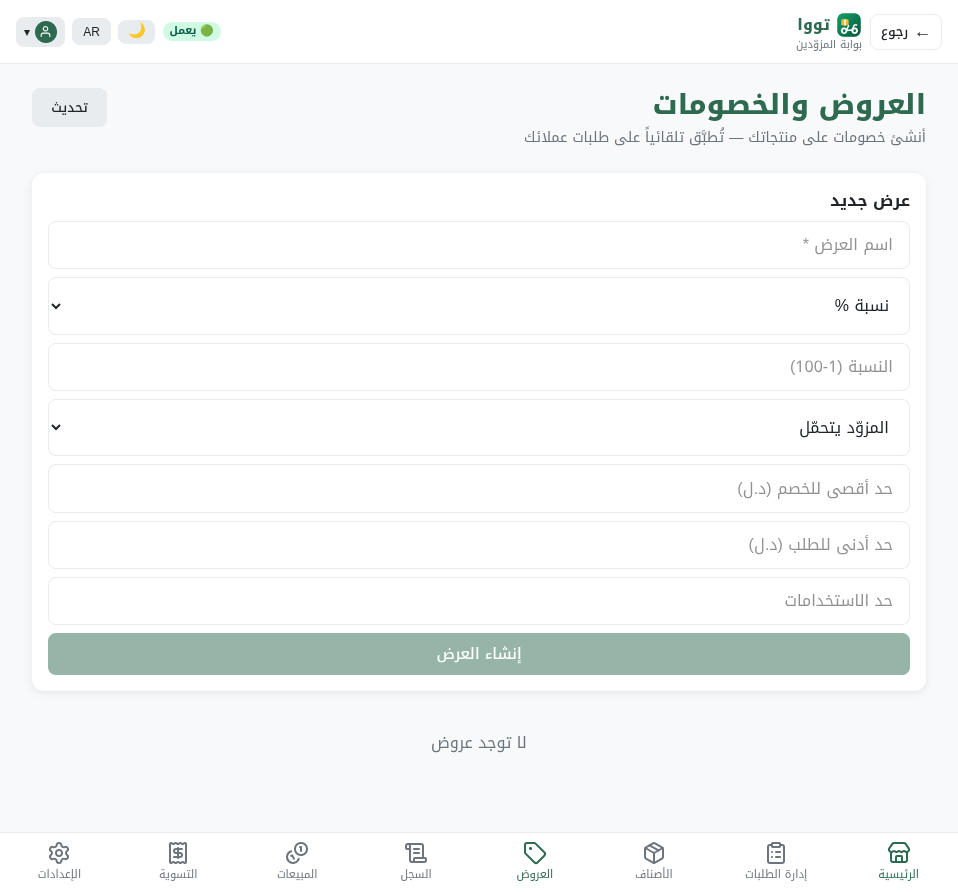

سجّلنا الدخول كمزوّد حقيقي في المتصفّح على خادم الاختبار، وتفاعلنا مع الواجهة، والتقطنا لقطات — لنُثبت أن التحديثات ظاهرة وتعمل فعلاً، لا مجرّد كود منشور.
🧑💻 دخول مزوّد حقيقي 🖱️ تفاعل مباشر 📸 6 لقطات 🔗 تكامل حيّ مؤكّدبعد أن نشرنا التحديثات على الخوادم، أردنا التأكّد أنها تظهر وتعمل على الشاشة فعلاً — لا أن نكتفي بأن «الكود موجود». لذلك فتحنا الواجهة في متصفّح حقيقي على خادم الاختبار المحلي (test1)، وسجّلنا الدخول كصاحب متجر حقيقي، وضغطنا الأزرار بأنفسنا، والتقطنا صوراً لكل ميزة.
كل ميزة أدناه رأيناها على الشاشة، ومعها لقطتها.
ما رأيناه: في أعلى الشاشة شارة خضراء «🟢 يعمل». وفي القائمة السفلية التسميات الجديدة: «المبيعات» (بدل «الأرباح») و«إدارة الطلبات» (بدل «التحضير»).

ما فعلناه على الشاشة: ضغطنا زر «⏸️ إيقاف مؤقّت» → ظهرت خيارات المدّة 15/30/45/60 دقيقة → اخترنا «30 دقيقة» → تحوّلت الحالة إلى «⏸️ متوقّف مؤقتاً حتى 09:24 ص» مع زرّ «استئناف الآن» وعدّاد «المتبقّي اليوم: 3 من 4».



ما رأيناه: قسم كامل في الإعدادات باسم «روابط التواصل (تظهر للعميل في صفحة المتجر)» بكل الحقول السبعة (واتساب · فيسبوك · إنستغرام · تيك توك · يوتيوب · سناب شات · الموقع)، ومعبّأ بالروابط التي أدخلناها.

ما رأيناه: في صفحة العروض صارت التسمية «المزوّد» (بدل «المنشأة») مع خيار مموّل «المنصّة».

هذه الميزتان تخصّان شاشة العميل. تحقّقنا أن الخادم يُرسل بياناتها فعلاً (حيّاً): delivery_method=SELF_DELIVERY · contact_phone · social_links. أي أن شاشة العميل ستعرض شريط «التوصيل من المتجر» وتبويب «عن المتجر». (لم نلتقط لقطة بصرية لها لأن المتصفّح كان بجلسة مزوّد لا عميل — انظر ملاحظة الصدق.)
عندما ضغطنا «30 دقيقة» في المتصفّح، لم تكن مجرّد حركة شكليّة — بل جرت دورة كاملة حيّة عبر النظام كلّه:
POST /me/pauseنعم — التحديثات ظاهرة وتعمل حيّاً على الشاشة. رأينا بأعيننا: الإيقاف المؤقّت يعمل من النقر حتى قاعدة البيانات (العدّاد 4→3)، شارة الحالة، التسميات الموحّدة، حقول روابط التواصل، وتسمية العروض الجديدة — كلها على واجهة حقيقية بحساب حقيقي. وبيانات واجهة العميل تُخدَم حيّاً عبر الـAPI.
📁 اللقطات الستّ محفوظة في: New File 10/لقطات-الفحص-البصري/